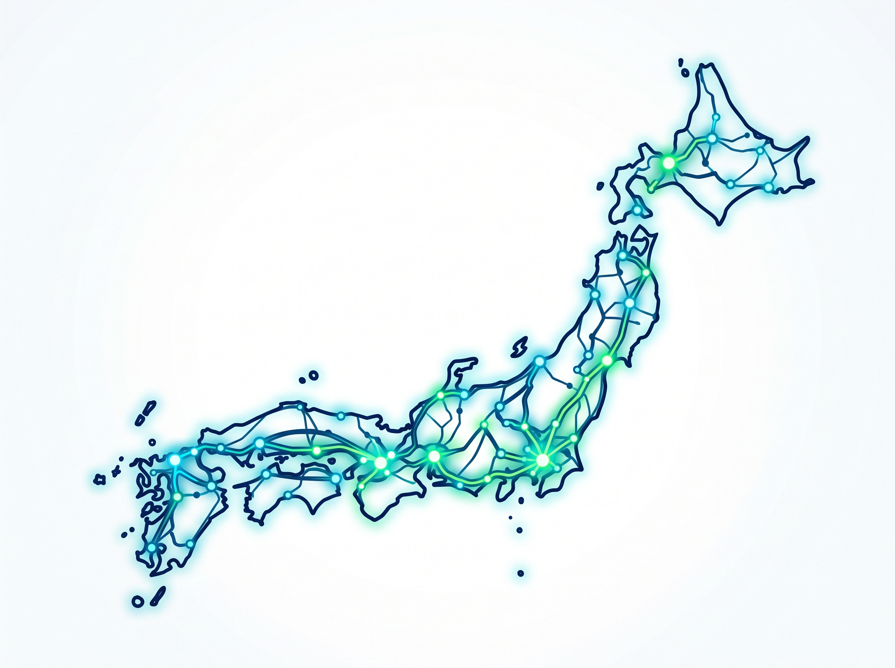

紙の回覧板から、
持続可能な地域の未来へ。
専用アプリ不要・月額完全０円。
高齢者にもやさしい「電子回覧板」の形。
小松 Smart自治PJ (KSL) は、班長さんの紙配りや出欠集計の負担を解消するために生まれた地域密着型のプロジェクトです。
住民のみなさんは使い慣れたLINEを開くだけ。文字が見やすいユニバーサルデザインで、機械が苦手なご年配の方でも迷わず安心してご利用いただけます。
維持費0円
(いつものLINE)
高齢者にも安心
その負担を、
なくしたい。
町内会・自治会の現場から
何十年も変わらなかった
「班長さん・会長さんの負担」に、本気で向き合う。
一軒一軒歩いて回るのが大変。外出中のお宅が多くて急ぎの回覧が途中で止まる…
隣に誰が住んでいるのか分からず、住民名簿の確認や更新作業に苦労している…
行事の出欠票を手作業で1枚ずつ数え、夜遅くまで集計するのが本当に負担…
「役員や班長は大変だからやりたくない」と、次の引き受け手が全く見つからない…
長年続いてきた紙の回覧や手作業の集計は、現代の役員さんにとってあまりにも重い負担です。
「そろそろ、無理のない形に変えませんか？」
私たちは時代に即さないやり方をやさしく見直し、現場の負担を本気で軽くするために本プロジェクトを立ち上げました。
無理に全員へスマホを押し付けるのではなく、できる人からLINEで受け取り、紙を希望する家庭にだけ配る運用も可能。一歩ずつ、みんなが笑顔になれる町内会運営をサポートします。
開発・提案者：吉柴 文悟（小松市議会議員）
スマホ1つで完結。住民も役員も迷わない、やさしい機能。
ボタンを押すだけの簡単操作。難しい設定や専用アプリは必要ありません。
電子回覧板・お知らせ
LINEから今月のお知らせをサクッと確認。紙を印刷してポストに配る負担がなくなり、急な連絡も確実に届きます。
集会所・施設予約
日付とお部屋を選ぶだけの簡単予約。紙の台帳や電話連絡による二重予約を防ぎ、いつでも空き状況が分かります。
イベント出欠・自動集計
「参加」「不参加」をワンタップで選ぶだけ。回答は自動でまとまるため、夜遅くまで紙を数える必要はありません。
もしもの安否確認
地震や台風の際、「無事です」をボタン1つで送信。電話連絡網に頼らず、地域の安全をすばやく把握できます。
よくあるご質問（Q&A）
導入にあたって町内会長様や役員様からよくいただくご質問にお答えします。
普通の「LINEグループ」とは何が違うのですか？
全員が参加するLINEグループだと、「他の人に自分の名前や電話番号が見えてしまう」「夜中に誰かの返信通知が鳴って迷惑になる」といったトラブルが起きがちです。
本システムは役員と住民が1対1（公式アカウント形式）で安全につながるため、個人のプライバシーがしっかり守られます。
なぜメールではなくLINEを使うのですか？
メールアドレスは登録や文字入力の手間が大きく、迷惑メールフォルダに入って届かないことが多いためです。現在、シニア層も含めて約9割の方がご家族との連絡でLINEを使っているため、新しい登録をほとんど意識せず誰でも簡単に見てもらえます。
この仕組みが急になくなって使えなくなる心配はありませんか？
ベンチャー企業1社の専用アプリではなく、広く社会インフラとなっているGoogleとLINEの公式な無料基盤をそのまま活用しています。会社が倒産してシステムが突然使えなくなるようなリスクが極めて低く、長期的に安心して使い続けられます。
本当にずっと無料ですか？後から費用を請求されませんか？
はい、サーバー費用や月額の利用料は完全に0円です。GoogleやLINEが提供している無料利用枠の範囲内で自治会業務が完結するよう工夫して設計しているため、地域に負担をかけずに継続できます。
町内会長が高齢でパソコンが苦手なのですが、導入できますか？
会長様ご自身がパソコンを操作する必要はありません。町内会の若手の方や役員サポートの方に1名協力いただき、その方とやり取りしながら初期設定を行います。会長様は「導入する」と決定していただくだけで大丈夫です。
市役所や町会連合会へ許可や書類申請を出す必要はありますか？
市や連合会への事前申請や届出は一切不要です。各町内会・自治会の自主的な取り組みとして、ご判断いただいたその日からすぐにお試し・運用いただけます。
住民や役員向けの説明会を開いてもらうことはできますか？
はい、小松市近郊であれば数名お集まりいただける機会に合わせて、実際のスマホ画面をお見せしながらわかりやすく説明にお伺いできます。お気軽にLINEよりご相談ください。
誰もが真似できる。月額コスト０円を可能にする仕組み。
信頼性の高い大手プラットフォームを賢く組み合わせることで、完全無料運用を実現しています。
LINE
(いつもの画面)
Web画面
(GitHub公開基盤)
スマホ最適化の
見やすい画面
Google スプレッドシート
(名簿・出欠の台帳)
役員がエクセル感覚で
手動修正も可能
自動化プログラム
(Google Apps Script)
住民照合と集計を
自動で安全に処理
安心のアクセス制限
名簿データと照合された住民のみが閲覧できる構造を採用。関係者以外のアクセスやいたずら防止を徹底しています。
1つの地域から、全国の自治会へ。オープンソースとして知見を共有。
小松 Smart自治PJは、特定の業者に依存するシステムではありません。
設計図、スプレッドシートのひな形、導入手順書はすべて一般公開されており、全国の自治体や地域の若手・エンジニアが自由に複製・活用できます。
市民自らの手で地域の課題を解決する輪を広げ、持続可能な自治会モデルを広げていきます。

(GitHubにて無料公開中)
DEVELOPER / PROPOSER
吉柴 文悟 Bungo Yoshiba（小松市議会議員）
地域の課題を自らの手で解決するシビックテックとして本プロジェクトを立ち上げました。
役員さんや班長さんの負担を減らし、誰もが笑顔で暮らせる持続可能な町内会を目指して活動しています。導入のご相談はお気軽にどうぞ。